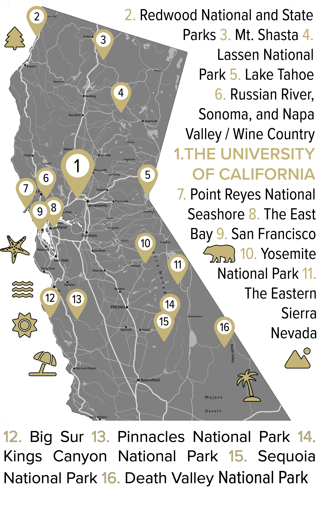

ABOUT
What do experimental geochemists do?
We study the chemical and mineralogical processes that shape Earth’s materials, from the growth of microscopic crystals to the formation of shells, veins, and rocks in natural environments. Our work combines laboratory experiments, analytical measurements, and theoretical models to understand how minerals record environmental conditions and how fluids and solids interact in Earth’s crust and oceans. While the primary goal is to advance fundamental geoscience, this research also improves our ability to interpret the geologic record and to understand past, present, and future changes in Earth’s climate and tectonic systems.
Biocalcification
Biocalcification is the process by which marine organisms, such as coccolithophores and corals, build skeletons and shells from calcium carbonate. We study how environmental conditions (e.g. temperature and seawater composition) influence mineral formation and how these processes are recorded in the geologic record.
Paleoclimate
Paleoclimate research uses chemical signatures preserved in fossils and minerals to reconstruct past climates. By measuring isotopes and trace elements in carbonate shells and crystals, we develop tools to infer ancient ocean temperatures, carbon cycling, and climate variability through Earth’s history.
Volcanoes
Volcanic systems host dynamic interactions between heat, fluids, and minerals. We use lab experiments and field observations to examine how magmatic and hydrothermal processes drive crystal growth, mineral alteration, and chemical exchange, helping to interpret volcanic histories and monitor evolving magma systems.
Crystal Growth
Crystal growth research explores how minerals form and evolve from fluids and melts. We combine experiments and microanalytical techniques to understand how temperature, chemistry, and growth rate control crystal textures and chemical zoning — information that can record environmental and geological conditions.
Faults and Veins
Faults and veins provide natural laboratories for studying how fluids move through the Earth’s crust. We investigate how minerals precipitate from fluids in fractures and fault zones, revealing the conditions of deformation, fluid flow, and chemical exchange during tectonic processes.
Basic Science
Much of our work focuses on fundamental geochemical processes. By studying mineral–fluid interactions at the atomic and experimental scale, he develops general principles that help explain how Earth materials form, react, and record information about our planet’s past.
OUR WORK
Publications
After our research on a particular topic is complete, we submit our findings for publication in academic journals. The work undergoes peer review where other scientists ensure its accuracy and originality. After revisions, the papers are published and can be accessed by scientists globally who may have interest in our work. The peer-review and publication process increases the collective knowledge of the scientific community, promotes collaboration, and informs future research directions.
Perfection has always eluded me, and I've never missed it.

WHAT'S NEXT?
Graduate school at UC Davis
If you're trying to decide which graduate school you'd like to attend, here are some reasons why you should choose the University of California, Davis.
Exeperimental Geochemistry at UC Davis
We are a group of geochemists who study how minerals, fluids, and environmental conditions interact to shape Earth’s materials and record its history. Our work combines laboratory experiments, analytical measurements, and theoretical models to investigate processes ranging from crystal growth and biocalcification to mineral precipitation in faults, veins, and volcanic systems. If you are interested in attending graduate school in experimental geochemistry at UC Davis, please email me with a copy of your CV and a brief statement describing your interests and why you would like to work with me. I am especially interested in working with motivated students who are curious, collaborative, and excited to explore how chemistry and geology intersect to explain our planet.
Earth and Planetary Science at UC Davis
The Department of Earth and Planetary Sciences is among the top geoscience programs in the world. Our faculty members are nationally and internationally recognized leaders in their fields. We're a big department, but we're not too big. You'll still have regular meetings with your advisor(s), have the chance to interact with all faculty members, and there's a healthy graduate community to support you in your research endeavors. Recent graduates have gone on to faculty positions, government jobs such as the United States Geological survey, national labs, and the private sector.
Davis
UC Davis is well known for its top-tier academics, strong focus on sustainability, and welcoming campus culture that fosters collaboration and innovation. Living in Davis complements the university experience with its bike-friendly, environmentally conscious community, excellent schools, and vibrant farmers' markets. The city's small-town charm combined with its proximity to Sacramento, San Francisco, and Napa Valley offers a perfect blend of tranquility and access to urban and recreational amenities.
Northern California
Northern California is wild, beautiful, and unspoiled. From Davis, you can day trip to the vineyards to enjoy world-class wine tasting in Napa, Sonoma, and Russian River Valleys. A short drive or train ride away is San Francisco and all its iconic landmarks such as the Golden Gate Bridge and Alcatraz, or instead you can enjoy the art and food scenes in the East Bay. If you're willing to venture a bit further, you can visit Yosemite National Park to see its iconic granite cliffs and waterfalls, Redwood National and State Parks to walk among ancient towering trees, or Lake Tahoe for year-round outdoor activities like skiing and hiking. Alternatively you could take a scenic drive along Highway 1 to charming towns like Mendocino or Big Sur’s rugged coastline, or explore Lassen Volcanic National Park, Mount Shasta, and historic gold rush towns.